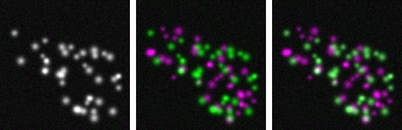

Two proteins are labelled with two dyes and imaged in two channels. Are they in the same place? The merged picture invites a yes; this unit turns the question into numbers, and shows how those numbers fool us.
The scatter plot (2D histogram) of the two channels.
Pearson’s r, the overlap coefficient, Manders’ M1 and M2.
Thresholds are the method: Costes’ automatic threshold.
Controls: shifting and scrambling one channel.
Pitfalls: background in the region, bleed-through, misalignment, and the resolution limit.
Slides titled The math give the formulas and proofs; the ideas are complete without them.
“White means colocalised”?

Channel A green, channel B magenta: where both are bright the merge is white (yellow in a red/green merge).
Left: B has exactly A’s structures. Middle: B’s structures are independent of A’s. Right: the same independent structures, but 40 % of A leaks into the B channel.
The right image has white spots, and its Pearson r is 0.32 instead of −0.08. Nothing moved: the optics did it.
The eye judges colour, which depends on the display range of each channel. We need numbers, and controls.
The scatter plot
For every pixel in the region of interest, plot (A, B): the 2D histogram of the two channels.
Colocalised structures: the cloud lies along a line through the origin (after the background), B \approx a\,A.
Independent structures: an L shape: bright A with dark B along one axis, bright B with dark A along the other.
Background pixels: a dense blob near (b_A, b_B), the two offsets.
The texture unit drew the same picture with an image and its own shifted copy (the co-occurrence matrix).
Every coefficient below is a summary of this cloud: how linear it is, how much of each channel’s mass lies above the other channel’s threshold.
Pearson’s correlation
r = the correlation of the two channels over the pixels of the region: +1 a perfect increasing line, 0 no linear relation, −1 a decreasing one.
Unchanged by an offset or a gain of either channel: it centres and scales.
The region matters. Cells bright in both channels on a dark background: the background pixels lie at (dark, dark), the cells at (bright, bright), so r is high even if the structures inside are independent. Demo: 0.51 over the whole image, −0.08 inside the cells.
Lowered by noise (perfectly colocalised but noisy channels: 0.99 at σ = 4, 0.88 at σ = 15).
Raised by bleed-through (0.32 from 40 % leakage).
One number for the whole region: it cannot say which structures overlap.
The math: correlation and overlap
Over the n pixels of the region, with means \bar A, \bar B:
r is the cosine of the angle between the centred vectors A - \bar A and B - \bar B; the overlap coefficient (Manders et al., 1993) is the cosine between the uncentred vectors.
A \mapsto gA + c: r unchanged for g > 0. The overlap coefficient changes with c: a common offset pushes it towards 1 (demo: 0.84 → 0.94 when the offset goes from 10 to 50).
r^2 is the share of the variance of B explained by a straight line in A.
Manders’ M1 and M2
Two questions instead of one: how much of A sits where B is, and how much of B sits where A is.
M1 = of A’s intensity in its above-threshold pixels, the share that lies in pixels where B is also above its threshold.
M2 = the same with A and B swapped.
Asymmetric by design. Small A spots inside large B structures: almost all of A is in B (M1 high), most of B has no A (M2 low). Demo: M1 = 0.79, M2 = 0.32, while r = 0.37 says little.
Weighted by intensity: bright pixels count more than dim ones.
M1 and M2 are only as good as the thresholdst_A and t_B that decide “above background”.
Without thresholds (t_A = t_B = 0) and any offset or noise, every pixel is “above”, so M_1 = M_2 = 1 whatever the images (demo, independent channels: 0.999 and 0.997).
Some programs define M_1 = \sum_i A_i [B_i > t_B] / \sum_i A_i, without the threshold on A in the denominator; on images with a background offset the two differ. State which one you use.
Both are fractions in [0, 1]; the chance level for independent channels is not 0 but about the share of B’s region in the image (demo, 75th-percentile thresholds: about 0.2).
Thresholds: Costes’ method
Where is the background? Costes et al. (2004) let the data decide:
Fit a line through the scatter plot (orthogonal regression: errors in both channels).
Start with thresholds at the top end of the line: t_A = max of A, t_B on the line.
Lower t_A step by step (t_B follows the line). After each step compute r of the pixels below the thresholds (A or B below).
Stop when that r reaches 0: the remaining low pixels are uncorrelated noise; everything above is signal.
Then report M1, M2 and r above both thresholds. It is a threshold chosen on a 2D histogram, as Otsu’s threshold is on a 1D histogram (the thresholding day).
Costes’ method needs a positive correlation: with r \le 0 there is no rising line to walk down, and the demo falls back to the 75th percentile of each channel.
The math: the regression line
Orthogonal (total least squares) regression minimises perpendicular distances: its direction is the first principal component of the centred (A, B) cloud (the PCA unit). With s_{AA}, s_{BB}, s_{AB} the sums of squares and products,
\text{slope} = \frac{s_{BB} - s_{AA} + \sqrt{(s_{BB} - s_{AA})^2 + 4 s_{AB}^2}}{2\,s_{AB}}, \qquad \text{intercept} = \bar B - \text{slope}\cdot\bar A.
Ordinary least squares of B on A assumes A has no noise and gives a flatter line; with noise in both channels the orthogonal line is the right one.
The search: t_A^{(k)} = \max A - k\,\Delta, t_B^{(k)} = \text{slope}\cdot t_A^{(k)} + \text{intercept}, stop at the first k with r(\{i : A_i \le t_A \text{ or } B_i \le t_B\}) \le 0.
Try it: colocalisation
Controls
A coefficient means little without a reference for “no colocalisation”:
Shift one channel by a few pixels: real colocalisation of small structures drops quickly (demo, perfect colocalisation: r 0.99 → 0.94 → 0.81 → 0.63 for shifts of 1, 2, 3 px). Correlations that survive large shifts come from large-scale structure (the cell outline, the background).
Randomisation (Costes): cut B into blocks about the size of the blur, shuffle the blocks, recompute r, many times. If the observed r is above nearly all shuffled values, the overlap is more than chance. Demo: shuffled r between −0.13 and 0.13 against 0.99 observed; for independent channels, 47 of 50 shuffles exceed the observed −0.08.
A biological control: two labels of the same protein (expected high) and two unrelated compartments (expected low).
Pitfalls
The region: background pixels and the cell outline inflate r. Measure inside the cells, or per object.
Bleed-through: dye A seen in channel B correlates the channels by itself, and randomisation cannot detect it (the leakage moves with the structures). Correct it first (the crosstalk unit of the spectral unmixing elective) or image sequentially.
Chromatic misalignment: the two colours focus at slightly different positions; a 1–3 px shift can halve r for small structures. Register the channels with beads.
Resolution: two proteins within one diffraction-limited spot (about 200 nm, the PSF of the image formation day) “colocalise” at any true distance below that. Colocalisation means “closer than the resolution”, never “in contact”.
Saturation caps the cloud; noise lowers r and blurs the thresholds.
Objects instead of pixels
Pixel-based coefficients mix many structures into one number. Object-based colocalisation segments spots in both channels and asks:
the share of A spots whose centroid lies inside a B object (the parent–child relation of the last unit);
the distance from each A spot to the nearest B spot, compared with the same distances after randomising the spot positions.
It needs a good segmentation of both channels, and it inherits all its errors.
Catalogue: colocalisation columns
column
measures
range
sensitive to
Pearson r
linear relation of A and B
−1 … 1
region, noise, bleed-through, shift
overlap coefficient
uncentred cosine
0 … 1
offsets
M1, M2
share of A’s (B’s) intensity where the other is present
0 … 1
thresholds
t_A, t_B (Costes)
thresholds from the regression line
intensity
correlation must be > 0
r above thresholds
relation within the signal
−1 … 1
slope of B on A
stoichiometry, if calibrated
bleed-through
randomisation p
how often shuffled B gives r \ge observed
0 … 1
block size
Summary
The scatter plot of the two channels is the picture; every coefficient summarises it.
Pearson r measures linearity, depends strongly on the region, and ignores offset and gain. The overlap coefficient does not ignore offsets.
M1, M2 measure how much of each channel lies where the other is, asymmetrically, and are meaningless without thresholds; Costes chooses them from the data.
Always run controls: shift a channel, randomise blocks, and check for bleed-through, misalignment and the resolution limit.